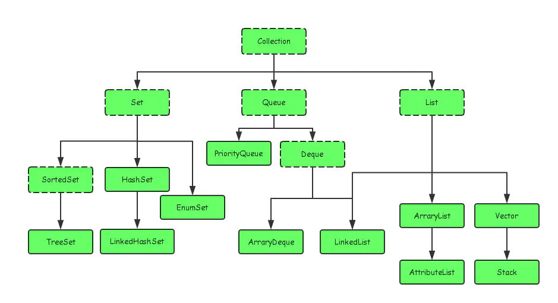
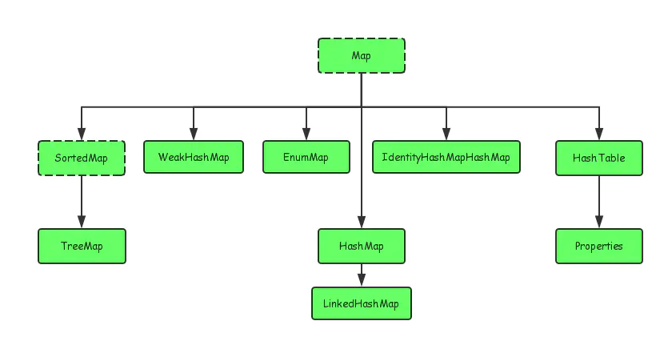
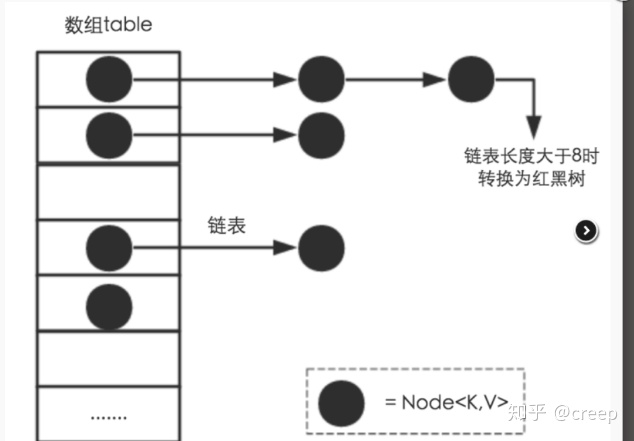
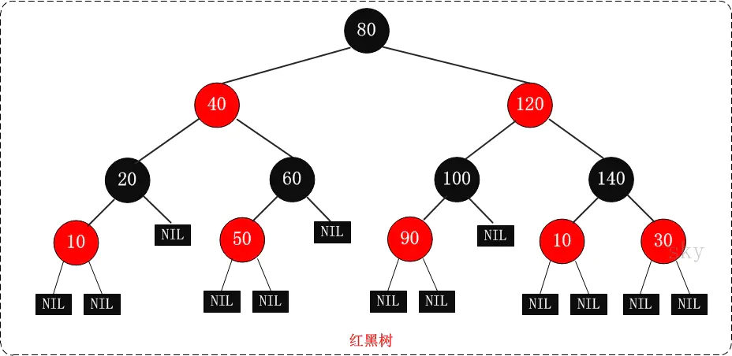

<!DOCTYPE html>


<html lang="zh">


<head>
  <meta charset="utf-8" />
   
  <meta name="keywords" content="hexo blog" />
   
  <meta name="description" content="young blog write my world" />
  
  <meta name="viewport" content="width=device-width, initial-scale=1, maximum-scale=1" />
  <title>
    Java集合 |  young blog write my world
  </title>
  <meta name="generator" content="hexo-theme-ayer">
  
  <link rel="shortcut icon" href="/favicon.ico" />
  
  
<link rel="stylesheet" href="/dist/main.css">

  
<link rel="stylesheet" href="https://cdn.jsdelivr.net/gh/Shen-Yu/cdn/css/remixicon.min.css">

  
<link rel="stylesheet" href="/css/custom.css">

  
  
<script src="https://cdn.jsdelivr.net/npm/pace-js@1.0.2/pace.min.js"></script>

  
  

  

</head>

</html>

<body>
  <div id="app">
    
      
    <main class="content on">
      <section class="outer">
  <article
  id="post-Java 集合"
  class="article article-type-post"
  itemscope
  itemprop="blogPost"
  data-scroll-reveal
>
  <div class="article-inner">
    
    <header class="article-header">
       
<h1 class="article-title sea-center" style="border-left:0" itemprop="name">
  Java集合
</h1>
 

    </header>
     
    <div class="article-meta">
      <a href="/2020/11/23/Java%20%E9%9B%86%E5%90%88/" class="article-date">
  <time datetime="2020-11-23T14:06:35.000Z" itemprop="datePublished">2020-11-23</time>
</a> 
  <div class="article-category">
    <a class="article-category-link" href="/categories/Java%E8%AF%AD%E6%B3%95/">Java语法</a>
  </div>
  
<div class="word_count">
    <span class="post-time">
        <span class="post-meta-item-icon">
            <i class="ri-quill-pen-line"></i>
            <span class="post-meta-item-text"> Word count:</span>
            <span class="post-count">3.8k</span>
        </span>
    </span>

    <span class="post-time">
        &nbsp; | &nbsp;
        <span class="post-meta-item-icon">
            <i class="ri-book-open-line"></i>
            <span class="post-meta-item-text"> Reading time≈</span>
            <span class="post-count">17 min</span>
        </span>
    </span>
</div>
 
    </div>
      
    <div class="tocbot"></div>


  
    <div class="article-entry" itemprop="articleBody">
       
  <h1 id="简介"><a href="#简介" class="headerlink" title="简介"></a>简介</h1><p>Java常用的集合对象一般有list，map，set和queue，它们之间的关系如下图所示：</p>
<p></p>
<p></p>
<p>可以看到：Collection是List，Set和Queue的父类，Map和Collection并列的关系。</p>
<h1 id="Map"><a href="#Map" class="headerlink" title="Map"></a>Map</h1><blockquote>
<p>Map实现类用于保存具有映射关系的数据。Map保存的每项数据都是key-value对，也就是由key和value两个值组成。Map里的key是不可重复的，key用户标识集合里的每项数据。</p>
</blockquote>
<h2 id="HashMap"><a href="#HashMap" class="headerlink" title="HashMap"></a>HashMap</h2><ul>
<li><p>HashMap是居于数组和链表（链表大于8时会利用红黑树）的结构。这样设计的优势在于，兼有数组的快速查找和链表的快速插入，删除元素的优势。结构如图如下：</p>
<p></p>
</li>
</ul>
<h3 id="源码分析"><a href="#源码分析" class="headerlink" title="源码分析"></a>源码分析</h3><h4 id="默认属性"><a href="#默认属性" class="headerlink" title="默认属性"></a>默认属性</h4><figure class="highlight plain"><table><tr><td class="gutter"><pre><span class="line">1</span><br><span class="line">2</span><br><span class="line">3</span><br><span class="line">4</span><br><span class="line">5</span><br><span class="line">6</span><br><span class="line">7</span><br><span class="line">8</span><br><span class="line">9</span><br><span class="line">10</span><br><span class="line">11</span><br><span class="line">12</span><br><span class="line">13</span><br><span class="line">14</span><br><span class="line">15</span><br></pre></td><td class="code"><pre><span class="line">public class HashMap&lt;K,V&gt; extends AbstractMap&lt;K,V&gt;</span><br><span class="line">    implements Map&lt;K,V&gt;, Cloneable, Serializable &#123;</span><br><span class="line">    static final int DEFAULT_INITIAL_CAPACITY &#x3D; 1 &lt;&lt; 4; &#x2F;&#x2F; Table数组的初始化长度,2^4&#x3D;16</span><br><span class="line">    static final int MAXIMUM_CAPACITY &#x3D; 1 &lt;&lt; 30; &#x2F;&#x2F;Table数组的最大长度： 1&lt;&lt;30 2^30&#x3D;1073741824</span><br><span class="line">    </span><br><span class="line">    &#x2F;&#x2F;负载因子：默认值为0.75。 当元素的总个数&gt;当前数组的长度 * 负载因子。数组会进行扩容，扩容为原来的两倍</span><br><span class="line">    static final float DEFAULT_LOAD_FACTOR &#x3D; 0.75f;</span><br><span class="line">    &#x2F;&#x2F;链表树化阙值： 默认值为 8 。表示在一个node（Table）节点下的值的个数大于8时候，会将链表转换成为红黑树。</span><br><span class="line">    static final int TREEIFY_THRESHOLD &#x3D; 8;</span><br><span class="line">    &#x2F;&#x2F;红黑树链化阙值： 默认值为 6 。 表示在进行扩容期间，单个Node节点下的红黑树节点的个数小于6时候，会将红黑树转化成为链表。</span><br><span class="line">    static final int UNTREEIFY_THRESHOLD &#x3D; 6;</span><br><span class="line">    &#x2F;&#x2F;最小树化阈值，当Table所有元素超过该值，才会进行树化（为了防止前期阶段频繁扩容和树化过程冲突）</span><br><span class="line">    &#x2F;&#x2F;也就是说Table长度超过这个值，链表超过8才会进行转成红黑树</span><br><span class="line">    MIN_TREEIFY_CAPACITY &#x3D; 64</span><br><span class="line">    &#125;</span><br></pre></td></tr></table></figure>

<h4 id="Node"><a href="#Node" class="headerlink" title="Node"></a>Node</h4><blockquote>
<p>链表实现时候元素节点Node，通过next来实现单链表</p>
</blockquote>
<figure class="highlight plain"><table><tr><td class="gutter"><pre><span class="line">1</span><br><span class="line">2</span><br><span class="line">3</span><br><span class="line">4</span><br><span class="line">5</span><br><span class="line">6</span><br><span class="line">7</span><br><span class="line">8</span><br><span class="line">9</span><br><span class="line">10</span><br><span class="line">11</span><br><span class="line">12</span><br><span class="line">13</span><br><span class="line">14</span><br><span class="line">15</span><br><span class="line">16</span><br><span class="line">17</span><br><span class="line">18</span><br><span class="line">19</span><br><span class="line">20</span><br><span class="line">21</span><br><span class="line">22</span><br><span class="line">23</span><br><span class="line">24</span><br><span class="line">25</span><br><span class="line">26</span><br><span class="line">27</span><br><span class="line">28</span><br><span class="line">29</span><br><span class="line">30</span><br><span class="line">31</span><br><span class="line">32</span><br><span class="line">33</span><br><span class="line">34</span><br><span class="line">35</span><br><span class="line">36</span><br><span class="line">37</span><br><span class="line">38</span><br><span class="line">39</span><br></pre></td><td class="code"><pre><span class="line">static class Node&lt;K,V&gt; implements Map.Entry&lt;K,V&gt; &#123;</span><br><span class="line">      final int hash;</span><br><span class="line">      final K key;</span><br><span class="line">      V value;</span><br><span class="line">      Node&lt;K,V&gt; next;</span><br><span class="line"></span><br><span class="line">      Node(int hash, K key, V value, Node&lt;K,V&gt; next) &#123;</span><br><span class="line">          this.hash &#x3D; hash;</span><br><span class="line">          this.key &#x3D; key;</span><br><span class="line">          this.value &#x3D; value;</span><br><span class="line">          this.next &#x3D; next;</span><br><span class="line">      &#125;</span><br><span class="line"></span><br><span class="line">      public final K getKey()        &#123; return key; &#125;</span><br><span class="line">      public final V getValue()      &#123; return value; &#125;</span><br><span class="line">      public final String toString() &#123; return key + &quot;&#x3D;&quot; + value; &#125;</span><br><span class="line"></span><br><span class="line">      public final int hashCode() &#123;</span><br><span class="line">          return Objects.hashCode(key) ^ Objects.hashCode(value);</span><br><span class="line">      &#125;</span><br><span class="line"></span><br><span class="line">      public final V setValue(V newValue) &#123;</span><br><span class="line">          V oldValue &#x3D; value;</span><br><span class="line">          value &#x3D; newValue;</span><br><span class="line">          return oldValue;</span><br><span class="line">      &#125;</span><br><span class="line"></span><br><span class="line">      public final boolean equals(Object o) &#123;</span><br><span class="line">          if (o &#x3D;&#x3D; this)</span><br><span class="line">              return true;</span><br><span class="line">          if (o instanceof Map.Entry) &#123;</span><br><span class="line">              Map.Entry&lt;?,?&gt; e &#x3D; (Map.Entry&lt;?,?&gt;)o;</span><br><span class="line">              if (Objects.equals(key, e.getKey()) &amp;&amp;</span><br><span class="line">                  Objects.equals(value, e.getValue()))</span><br><span class="line">                  return true;</span><br><span class="line">          &#125;</span><br><span class="line">          return false;</span><br><span class="line">      &#125;</span><br><span class="line">  &#125;</span><br></pre></td></tr></table></figure>

<h4 id="put"><a href="#put" class="headerlink" title="put"></a>put</h4><ul>
<li>1.对key的hashCode()做hash运算，计算index;</li>
<li>2.如果没碰撞直接放到bucket⾥；</li>
<li>3.如果碰撞了，以链表的形式存在buckets后；</li>
<li>4.如果碰撞导致链表过⻓(⼤于等于TREEIFY_THRESHOLD)，就把链表转换成红⿊树(JDK1.8中的改动)；</li>
<li>5.如果节点已经存在就替换old value(保证key的唯⼀性)</li>
<li>6.如果bucket满了(超过load factor*current capacity)，就要resize</li>
</ul>
<figure class="highlight plain"><table><tr><td class="gutter"><pre><span class="line">1</span><br><span class="line">2</span><br><span class="line">3</span><br><span class="line">4</span><br><span class="line">5</span><br><span class="line">6</span><br><span class="line">7</span><br><span class="line">8</span><br><span class="line">9</span><br><span class="line">10</span><br><span class="line">11</span><br><span class="line">12</span><br><span class="line">13</span><br><span class="line">14</span><br><span class="line">15</span><br><span class="line">16</span><br><span class="line">17</span><br><span class="line">18</span><br><span class="line">19</span><br><span class="line">20</span><br><span class="line">21</span><br><span class="line">22</span><br><span class="line">23</span><br><span class="line">24</span><br><span class="line">25</span><br><span class="line">26</span><br><span class="line">27</span><br><span class="line">28</span><br><span class="line">29</span><br><span class="line">30</span><br><span class="line">31</span><br><span class="line">32</span><br><span class="line">33</span><br><span class="line">34</span><br><span class="line">35</span><br><span class="line">36</span><br><span class="line">37</span><br><span class="line">38</span><br><span class="line">39</span><br><span class="line">40</span><br><span class="line">41</span><br><span class="line">42</span><br><span class="line">43</span><br></pre></td><td class="code"><pre><span class="line">final V putVal(int hash, K key, V value, boolean onlyIfAbsent,</span><br><span class="line">               boolean evict) &#123;</span><br><span class="line">    Node&lt;K,V&gt;[] tab; Node&lt;K,V&gt; p; int n, i;</span><br><span class="line">    if ((tab &#x3D; table) &#x3D;&#x3D; null || (n &#x3D; tab.length) &#x3D;&#x3D; 0)</span><br><span class="line">        n &#x3D; (tab &#x3D; resize()).length;</span><br><span class="line">    if ((p &#x3D; tab[i &#x3D; (n - 1) &amp; hash]) &#x3D;&#x3D; null)</span><br><span class="line">        tab[i] &#x3D; newNode(hash, key, value, null);</span><br><span class="line">    else &#123;</span><br><span class="line">        Node&lt;K,V&gt; e; K k;</span><br><span class="line">        if (p.hash &#x3D;&#x3D; hash &amp;&amp;</span><br><span class="line">            ((k &#x3D; p.key) &#x3D;&#x3D; key || (key !&#x3D; null &amp;&amp; key.equals(k))))</span><br><span class="line">            e &#x3D; p;</span><br><span class="line">        else if (p instanceof TreeNode)</span><br><span class="line">            e &#x3D; ((TreeNode&lt;K,V&gt;)p).putTreeVal(this, tab, hash, key, value);</span><br><span class="line">        else &#123;</span><br><span class="line">            for (int binCount &#x3D; 0; ; ++binCount) &#123;</span><br><span class="line">                if ((e &#x3D; p.next) &#x3D;&#x3D; null) &#123;</span><br><span class="line">                    p.next &#x3D; newNode(hash, key, value, null);</span><br><span class="line">                    if (binCount &gt;&#x3D; TREEIFY_THRESHOLD - 1) &#x2F;&#x2F; -1 for 1st</span><br><span class="line">                        treeifyBin(tab, hash);</span><br><span class="line">                    break;</span><br><span class="line">                &#125;</span><br><span class="line">                if (e.hash &#x3D;&#x3D; hash &amp;&amp;</span><br><span class="line">                    ((k &#x3D; e.key) &#x3D;&#x3D; key || (key !&#x3D; null &amp;&amp; key.equals(k))))</span><br><span class="line">                    break;</span><br><span class="line">                p &#x3D; e;</span><br><span class="line">            &#125;</span><br><span class="line">        &#125;</span><br><span class="line">        if (e !&#x3D; null) &#123; &#x2F;&#x2F; existing mapping for key</span><br><span class="line">            V oldValue &#x3D; e.value;</span><br><span class="line">            if (!onlyIfAbsent || oldValue &#x3D;&#x3D; null)</span><br><span class="line">                e.value &#x3D; value;</span><br><span class="line">            afterNodeAccess(e);</span><br><span class="line">            return oldValue;</span><br><span class="line">        &#125;</span><br><span class="line">    &#125;</span><br><span class="line">    ++modCount;</span><br><span class="line">    if (++size &gt; threshold)</span><br><span class="line">        resize();</span><br><span class="line">    afterNodeInsertion(evict);</span><br><span class="line">    return null;</span><br><span class="line">&#125;</span><br><span class="line"></span><br></pre></td></tr></table></figure>

<p>这里面，我们可以发现几个细节：</p>
<ul>
<li>bucket在进行扩容的时候，刚好是<strong>2的次幂</strong>，在做取模运算的效率⾼。</li>
<li>计算bucket的index时，p = tab[i = (n - 1) &amp; hash]) == null，这样效率会更高</li>
</ul>
<p></p>
<h4 id="get"><a href="#get" class="headerlink" title="get"></a>get</h4><ul>
<li>1.对key的hashCode()做hash运算，计算index;</li>
<li>2.如果在bucket⾥的第⼀个节点⾥直接命中，则直接返回；</li>
<li>3.如果有冲突，则通过key.equals(k)去查找对应的Entry;</li>
<li>4.若为树，则在树中通过key.equals(k)查找，O(logn)；</li>
<li>若为链表，则在链表中通过key.equals(k)查找，O(n).</li>
</ul>
<figure class="highlight plain"><table><tr><td class="gutter"><pre><span class="line">1</span><br><span class="line">2</span><br><span class="line">3</span><br><span class="line">4</span><br><span class="line">5</span><br><span class="line">6</span><br><span class="line">7</span><br><span class="line">8</span><br><span class="line">9</span><br><span class="line">10</span><br><span class="line">11</span><br><span class="line">12</span><br><span class="line">13</span><br><span class="line">14</span><br><span class="line">15</span><br><span class="line">16</span><br><span class="line">17</span><br><span class="line">18</span><br><span class="line">19</span><br></pre></td><td class="code"><pre><span class="line">final Node&lt;K,V&gt; getNode(int hash, Object key) &#123;</span><br><span class="line">      Node&lt;K,V&gt;[] tab; Node&lt;K,V&gt; first, e; int n; K k;</span><br><span class="line">      if ((tab &#x3D; table) !&#x3D; null &amp;&amp; (n &#x3D; tab.length) &gt; 0 &amp;&amp;</span><br><span class="line">          (first &#x3D; tab[(n - 1) &amp; hash]) !&#x3D; null) &#123;</span><br><span class="line">          if (first.hash &#x3D;&#x3D; hash &amp;&amp; &#x2F;&#x2F; always check first node</span><br><span class="line">              ((k &#x3D; first.key) &#x3D;&#x3D; key || (key !&#x3D; null &amp;&amp; key.equals(k))))</span><br><span class="line">              return first;</span><br><span class="line">          if ((e &#x3D; first.next) !&#x3D; null) &#123;</span><br><span class="line">              if (first instanceof TreeNode)</span><br><span class="line">                  return ((TreeNode&lt;K,V&gt;)first).getTreeNode(hash, key);</span><br><span class="line">              do &#123;</span><br><span class="line">                  if (e.hash &#x3D;&#x3D; hash &amp;&amp;</span><br><span class="line">                      ((k &#x3D; e.key) &#x3D;&#x3D; key || (key !&#x3D; null &amp;&amp; key.equals(k))))</span><br><span class="line">                      return e;</span><br><span class="line">              &#125; while ((e &#x3D; e.next) !&#x3D; null);</span><br><span class="line">          &#125;</span><br><span class="line">      &#125;</span><br><span class="line">      return null;</span><br><span class="line">  &#125;</span><br></pre></td></tr></table></figure>

<h4 id="resize"><a href="#resize" class="headerlink" title="resize"></a>resize</h4><p>每次扩容大小是以前的2倍，为了更加方便对原来元素进行位置插入</p>
<p></p>
<p>因此，我们在扩充HashMap的时候，不需要像JDK1.7的实现那样重新计算hash，只需要看看原来的hash值新增的那个bit是1还是0就好了，是0的话索引没变，是1的话索引变成“原索引+oldCap”，可以看看下图为16扩充为32的resize示意图：</p>
<p></p>
<p>这个设计确实非常的巧妙，既省去了重新计算hash值的时间，而且同时，由于新增的1bit是0还是1可以认为是随机的，因此resize的过程，均匀的把之前的冲突的节点分散到新的bucket了。这一块就是JDK1.8新增的优化点。</p>
<h4 id="TreeNode"><a href="#TreeNode" class="headerlink" title="TreeNode"></a>TreeNode</h4><p></p>
<ul>
<li><p>特点：</p>
<ul>
<li>每个节点或者是黑色，或者是红色。</li>
<li>根节点是黑色。</li>
<li>每个叶子节点（NIL）是黑色。 [注意：这里叶子节点，是指为空(NIL或NULL)的叶子节点。</li>
<li>如果一个节点是红色的，则它的子节点必须是黑色的。</li>
<li>从一个节点到该节点的子孙节点的所有路径上包含相同数目的黑节点。</li>
</ul>
</li>
<li><p>链表的时间复杂度：O(n)，红黑树的时间复杂度：O(lgN)</p>
</li>
<li><p>定义：</p>
</li>
</ul>
<figure class="highlight ruby"><table><tr><td class="gutter"><pre><span class="line">1</span><br><span class="line">2</span><br><span class="line">3</span><br><span class="line">4</span><br><span class="line">5</span><br><span class="line">6</span><br><span class="line">7</span><br><span class="line">8</span><br><span class="line">9</span><br></pre></td><td class="code"><pre><span class="line">static final <span class="class"><span class="keyword">class</span> <span class="title">TreeNode</span>&lt;K,<span class="title">V</span>&gt; <span class="title">extends</span> <span class="title">LinkedHashMap</span>.<span class="title">Entry</span>&lt;K,<span class="title">V</span>&gt; &#123;</span></span><br><span class="line">    TreeNode&lt;K,V&gt; parent;  <span class="regexp">//</span> red-black tree links 父节点</span><br><span class="line">    TreeNode&lt;K,V&gt; left;  <span class="regexp">//</span>左子树</span><br><span class="line">    TreeNode&lt;K,V&gt; right; <span class="regexp">//</span>右子树</span><br><span class="line">    TreeNode&lt;K,V&gt; prev;  <span class="regexp">//</span> 删除后需要取消链接 needed to unlink <span class="keyword">next</span> upon deletion</span><br><span class="line">    boolean red;        <span class="regexp">//</span>颜色属性</span><br><span class="line">    TreeNode(int hash, K key, V val, Node&lt;K,V&gt; <span class="keyword">next</span>) &#123;</span><br><span class="line">        <span class="keyword">super</span>(hash, key, val, <span class="keyword">next</span>);</span><br><span class="line">    &#125;</span><br></pre></td></tr></table></figure>


<h2 id="concurrentHashMap"><a href="#concurrentHashMap" class="headerlink" title="concurrentHashMap"></a>concurrentHashMap</h2><blockquote>
<p>线程安全的HashMap，JDK1.8是通过synchronized，以及CAS无锁操作以保证操作的线程安全性</p>
</blockquote>
<h1 id="Collection"><a href="#Collection" class="headerlink" title="Collection"></a>Collection</h1><p>我们来简单看下Collection源码结构：</p>
<figure class="highlight plain"><table><tr><td class="gutter"><pre><span class="line">1</span><br><span class="line">2</span><br><span class="line">3</span><br><span class="line">4</span><br><span class="line">5</span><br><span class="line">6</span><br><span class="line">7</span><br><span class="line">8</span><br><span class="line">9</span><br><span class="line">10</span><br><span class="line">11</span><br><span class="line">12</span><br><span class="line">13</span><br><span class="line">14</span><br><span class="line">15</span><br><span class="line">16</span><br><span class="line">17</span><br><span class="line">18</span><br><span class="line">19</span><br><span class="line">20</span><br><span class="line">21</span><br><span class="line">22</span><br><span class="line">23</span><br><span class="line">24</span><br></pre></td><td class="code"><pre><span class="line"></span><br><span class="line">public interface Collection&lt;E&gt; extends Iterable&lt;E&gt; &#123;</span><br><span class="line"></span><br><span class="line">  int size();</span><br><span class="line">  </span><br><span class="line">  boolean isEmpty();</span><br><span class="line">  </span><br><span class="line"></span><br><span class="line">  boolean contains(Object o);</span><br><span class="line">  boolean containsAll(Collection&lt;?&gt; c);</span><br><span class="line"> </span><br><span class="line">  Iterator&lt;E&gt; iterator();</span><br><span class="line"></span><br><span class="line">  boolean add(E e);</span><br><span class="line">  boolean remove(Object o);</span><br><span class="line">  boolean addAll(Collection&lt;? extends E&gt; c);</span><br><span class="line">  boolean removeAll(Collection&lt;?&gt; c);</span><br><span class="line">  </span><br><span class="line">  boolean retainAll(Collection&lt;?&gt; c);</span><br><span class="line">  </span><br><span class="line">  void clear();</span><br><span class="line">  boolean equals(Object o);</span><br><span class="line">  int hashCode();</span><br><span class="line">&#125;</span><br></pre></td></tr></table></figure>

<p>基本上都是对常用方法对定义，子类必须要实现的方法。</p>
<h1 id="Set"><a href="#Set" class="headerlink" title="Set"></a>Set</h1><blockquote>
<p>Set的表现最像Collection，实际上，Set特点是<strong>不允许包含重复元素</strong>，也就是add的时候，如果是相同的元素会报异常，Set集成Collection，所以需要看Set的实现类，HashSet,LinkedHashSet,TreeSet</p>
</blockquote>
<h2 id="HashSet"><a href="#HashSet" class="headerlink" title="HashSet"></a>HashSet</h2><blockquote>
<p>HashSet比较简单，内部是由HashMap来实现的，用HashMap的key作为Set的值，保证了不重复。Map此时的value是同一个new Object对象。</p>
</blockquote>
<figure class="highlight plain"><table><tr><td class="gutter"><pre><span class="line">1</span><br><span class="line">2</span><br><span class="line">3</span><br><span class="line">4</span><br><span class="line">5</span><br><span class="line">6</span><br><span class="line">7</span><br><span class="line">8</span><br><span class="line">9</span><br><span class="line">10</span><br></pre></td><td class="code"><pre><span class="line">public class HashSet&lt;E&gt; extends AbstractSet&lt;E&gt; implements Set&lt;E&gt;, Cloneable, java.io.Serializable</span><br><span class="line">&#123;</span><br><span class="line">			public HashSet() &#123;</span><br><span class="line">        map &#x3D; new HashMap&lt;&gt;();</span><br><span class="line">    	&#125;</span><br><span class="line">    	</span><br><span class="line">    	public boolean add(E e) &#123;</span><br><span class="line">        return map.put(e, PRESENT)&#x3D;&#x3D;null;</span><br><span class="line">    &#125;</span><br><span class="line">  &#125;</span><br></pre></td></tr></table></figure>

<h1 id="List"><a href="#List" class="headerlink" title="List"></a>List</h1><h2 id="ArrayList"><a href="#ArrayList" class="headerlink" title="ArrayList"></a>ArrayList</h2><h3 id="特点"><a href="#特点" class="headerlink" title="特点"></a>特点</h3><ul>
<li>它是基于数组实现的List类</li>
<li>可以动态地调整容量</li>
<li>有序的（元素输出顺序与输入顺序一致）</li>
<li>元素可以为 null</li>
<li>不同步，非线程安全，效率高</li>
<li>查询快，增删慢</li>
<li>占用空间更小，对比 LinkedList，不用占用额外空间维护链表结构</li>
</ul>
<h3 id="源码分析-1"><a href="#源码分析-1" class="headerlink" title="源码分析"></a>源码分析</h3><ul>
<li>属性</li>
</ul>
<figure class="highlight plain"><table><tr><td class="gutter"><pre><span class="line">1</span><br><span class="line">2</span><br><span class="line">3</span><br><span class="line">4</span><br><span class="line">5</span><br><span class="line">6</span><br><span class="line">7</span><br><span class="line">8</span><br><span class="line">9</span><br><span class="line">10</span><br><span class="line">11</span><br><span class="line">12</span><br><span class="line">13</span><br><span class="line">14</span><br><span class="line">15</span><br><span class="line">16</span><br><span class="line">17</span><br><span class="line">18</span><br><span class="line">19</span><br><span class="line">20</span><br><span class="line">21</span><br><span class="line">22</span><br></pre></td><td class="code"><pre><span class="line">public class ArrayList&lt;E&gt; extends AbstractList&lt;E&gt;</span><br><span class="line">        implements List&lt;E&gt;, RandomAccess, Cloneable, java.io.Serializable</span><br><span class="line">&#123;</span><br><span class="line">	&#x2F;&#x2F;数组初始化容量10</span><br><span class="line">	private static final int DEFAULT_CAPACITY &#x3D; 10;</span><br><span class="line">	</span><br><span class="line">	&#x2F;&#x2F;数组内有元素的个数</span><br><span class="line">	private int size;</span><br><span class="line">	</span><br><span class="line">	&#x2F;&#x2F; 空对象数组</span><br><span class="line">	private static final Object[] EMPTY_ELEMENTDATA &#x3D; &#123;&#125;;</span><br><span class="line">	</span><br><span class="line">	&#x2F;&#x2F; 缺省空对象数组</span><br><span class="line">	private static final Object[] DEFAULTCAPACITY_EMPTY_ELEMENTDATA &#x3D; &#123;&#125;;</span><br><span class="line">	</span><br><span class="line">	&#x2F;&#x2F; 底层数据结构，数组</span><br><span class="line">	transient Object[] elementData;</span><br><span class="line">	</span><br><span class="line">	&#x2F;&#x2F; 最大数组容量</span><br><span class="line">	private static final int MAX_ARRAY_SIZE &#x3D; Integer.MAX_VALUE - 8;</span><br><span class="line">	</span><br><span class="line">&#125;</span><br></pre></td></tr></table></figure>

<ul>
<li>构造方法</li>
</ul>
<figure class="highlight plain"><table><tr><td class="gutter"><pre><span class="line">1</span><br><span class="line">2</span><br><span class="line">3</span><br><span class="line">4</span><br><span class="line">5</span><br><span class="line">6</span><br><span class="line">7</span><br><span class="line">8</span><br><span class="line">9</span><br><span class="line">10</span><br><span class="line">11</span><br><span class="line">12</span><br><span class="line">13</span><br><span class="line">14</span><br><span class="line">15</span><br><span class="line">16</span><br><span class="line">17</span><br><span class="line">18</span><br><span class="line">19</span><br><span class="line">20</span><br><span class="line">21</span><br><span class="line">22</span><br><span class="line">23</span><br><span class="line">24</span><br><span class="line">25</span><br><span class="line">26</span><br><span class="line">27</span><br><span class="line">28</span><br><span class="line">29</span><br><span class="line">30</span><br><span class="line">31</span><br><span class="line">32</span><br><span class="line">33</span><br><span class="line">34</span><br><span class="line">35</span><br><span class="line">36</span><br></pre></td><td class="code"><pre><span class="line">&#x2F;&#x2F;默认构造方法，初始为空数组。</span><br><span class="line">&#x2F;&#x2F;只有插入一条数据后才会扩展为10，而实际上默认是空的</span><br><span class="line"> public ArrayList() &#123;</span><br><span class="line">    this.elementData &#x3D; DEFAULTCAPACITY_EMPTY_ELEMENTDATA;</span><br><span class="line">&#125;</span><br><span class="line"></span><br><span class="line">&#x2F;&#x2F;根据指定容量创建对象数组</span><br><span class="line">public ArrayList(int initialCapacity) &#123;</span><br><span class="line">    if (initialCapacity &gt; 0) &#123;</span><br><span class="line">        &#x2F;&#x2F;创建initialCapacity大小的数组</span><br><span class="line">        this.elementData &#x3D; new Object[initialCapacity];</span><br><span class="line">    &#125; else if (initialCapacity &#x3D;&#x3D; 0) &#123;</span><br><span class="line">        &#x2F;&#x2F;创建空数组</span><br><span class="line">        this.elementData &#x3D; EMPTY_ELEMENTDATA;</span><br><span class="line">    &#125; else &#123;</span><br><span class="line">        throw new IllegalArgumentException(&quot;Illegal Capacity: &quot;+</span><br><span class="line">                                               initialCapacity);</span><br><span class="line">    &#125;</span><br><span class="line">&#125;</span><br><span class="line"></span><br><span class="line">&#x2F;**</span><br><span class="line"> * 构造一个包含指定集合的元素的列表，按照它们由集合的迭代器返回的顺序。</span><br><span class="line"> *&#x2F;</span><br><span class="line">public ArrayList(Collection&lt;? extends E&gt; c) &#123;</span><br><span class="line">    &#x2F;&#x2F;转换最主要的是toArray()，这在Collection中就定义了</span><br><span class="line">    elementData &#x3D; c.toArray();</span><br><span class="line">    if ((size &#x3D; elementData.length) !&#x3D; 0) &#123;</span><br><span class="line">        &#x2F;&#x2F; c.toArray 有可能不返回一个 Object 数组</span><br><span class="line">        if (elementData.getClass() !&#x3D; Object[].class)</span><br><span class="line">            &#x2F;&#x2F;使用 Arrays.copy 方法拷创建一个 Object 数组</span><br><span class="line">            elementData &#x3D; Arrays.copyOf(elementData, size, Object[].class);</span><br><span class="line">    &#125; else &#123;</span><br><span class="line">        &#x2F;&#x2F; 替换为空数组</span><br><span class="line">        this.elementData &#x3D; EMPTY_ELEMENTDATA;</span><br><span class="line">    &#125;</span><br><span class="line">&#125;</span><br></pre></td></tr></table></figure>

<ul>
<li>add</li>
</ul>
<figure class="highlight plain"><table><tr><td class="gutter"><pre><span class="line">1</span><br><span class="line">2</span><br><span class="line">3</span><br><span class="line">4</span><br><span class="line">5</span><br></pre></td><td class="code"><pre><span class="line">public boolean add(E e) &#123;</span><br><span class="line">       ensureCapacityInternal(size + 1);  &#x2F;&#x2F; size表示数组插入的值的个数，所以第一步应该确保数组的长度足够新值的插入</span><br><span class="line">       elementData[size++] &#x3D; e;  &#x2F;&#x2F;elementData保存的是添加值的数组</span><br><span class="line">       return true;</span><br><span class="line">   &#125;</span><br></pre></td></tr></table></figure>

<figure class="highlight plain"><table><tr><td class="gutter"><pre><span class="line">1</span><br><span class="line">2</span><br><span class="line">3</span><br></pre></td><td class="code"><pre><span class="line">private void ensureCapacityInternal(int minCapacity) &#123;</span><br><span class="line">       ensureExplicitCapacity(calculateCapacity(elementData, minCapacity));</span><br><span class="line">   &#125;</span><br></pre></td></tr></table></figure>

<figure class="highlight plain"><table><tr><td class="gutter"><pre><span class="line">1</span><br><span class="line">2</span><br><span class="line">3</span><br><span class="line">4</span><br><span class="line">5</span><br><span class="line">6</span><br></pre></td><td class="code"><pre><span class="line">private void ensureExplicitCapacity(int minCapacity) &#123;</span><br><span class="line">      modCount++;</span><br><span class="line">      &#x2F;&#x2F; overflow-conscious code</span><br><span class="line">      if (minCapacity - elementData.length &gt; 0)</span><br><span class="line">          grow(minCapacity);</span><br><span class="line">  &#125;</span><br></pre></td></tr></table></figure>

<figure class="highlight plain"><table><tr><td class="gutter"><pre><span class="line">1</span><br><span class="line">2</span><br><span class="line">3</span><br><span class="line">4</span><br><span class="line">5</span><br><span class="line">6</span><br><span class="line">7</span><br><span class="line">8</span><br><span class="line">9</span><br><span class="line">10</span><br><span class="line">11</span><br></pre></td><td class="code"><pre><span class="line">private void grow(int minCapacity) &#123; &#x2F;&#x2F;数组扩容，每次是原来的1.5倍，通过Arrays.copyOf扩容</span><br><span class="line">      &#x2F;&#x2F; overflow-conscious code</span><br><span class="line">      int oldCapacity &#x3D; elementData.length;</span><br><span class="line">      int newCapacity &#x3D; oldCapacity + (oldCapacity &gt;&gt; 1);</span><br><span class="line">      if (newCapacity - minCapacity &lt; 0)</span><br><span class="line">          newCapacity &#x3D; minCapacity;</span><br><span class="line">      if (newCapacity - MAX_ARRAY_SIZE &gt; 0)</span><br><span class="line">          newCapacity &#x3D; hugeCapacity(minCapacity);</span><br><span class="line">      &#x2F;&#x2F; minCapacity is usually close to size, so this is a win:</span><br><span class="line">      elementData &#x3D; Arrays.copyOf(elementData, newCapacity);</span><br><span class="line">  &#125;</span><br></pre></td></tr></table></figure>

<ul>
<li>remove</li>
</ul>
<figure class="highlight plain"><table><tr><td class="gutter"><pre><span class="line">1</span><br><span class="line">2</span><br><span class="line">3</span><br><span class="line">4</span><br><span class="line">5</span><br><span class="line">6</span><br><span class="line">7</span><br><span class="line">8</span><br><span class="line">9</span><br><span class="line">10</span><br><span class="line">11</span><br><span class="line">12</span><br><span class="line">13</span><br><span class="line">14</span><br><span class="line">15</span><br></pre></td><td class="code"><pre><span class="line">&#x2F;&#x2F;System.arraycopy将index后面的元素都往前移动一位，然后size-1</span><br><span class="line">public E remove(int index) &#123;</span><br><span class="line">       rangeCheck(index);</span><br><span class="line"></span><br><span class="line">       modCount++;</span><br><span class="line">       E oldValue &#x3D; elementData(index);</span><br><span class="line"></span><br><span class="line">       int numMoved &#x3D; size - index - 1;</span><br><span class="line">       if (numMoved &gt; 0)</span><br><span class="line">           System.arraycopy(elementData, index+1, elementData, index,</span><br><span class="line">                            numMoved);</span><br><span class="line">       elementData[--size] &#x3D; null; &#x2F;&#x2F; clear to let GC do its work</span><br><span class="line"></span><br><span class="line">       return oldValue;</span><br><span class="line">   &#125;</span><br></pre></td></tr></table></figure>

<h3 id="为什么ArrayList是线程不安全的"><a href="#为什么ArrayList是线程不安全的" class="headerlink" title="为什么ArrayList是线程不安全的"></a>为什么ArrayList是线程不安全的</h3><p><strong>以add方法为例</strong></p>
<ol>
<li>列表大小为9，即size=9</li>
<li>线程A开始进入add方法，这时它获取到size的值为9，调用ensureCapacityInternal方法进行容量判断。</li>
<li>线程B此时也进入add方法，它获取到size的值也为9，也开始调用ensureCapacityInternal方法。</li>
<li>线程A发现需求大小为10，而elementData的大小就为10，可以容纳。于是它不再扩容，返回。</li>
<li>线程B也发现需求大小为10，也可以容纳，返回。</li>
<li>线程A开始进行设置值操作， elementData[size++] = e 操作。此时size变为10。</li>
<li>线程B也开始进行设置值操作，它尝试设置elementData[10] = e，而elementData没有进行过扩容，它的下标最大为9。于是此时会报出一个数组越界的异常ArrayIndexOutOfBoundsException.</li>
</ol>
<h3 id="Vector"><a href="#Vector" class="headerlink" title="Vector"></a>Vector</h3><p>Vector和ArrayList类似，但是它通过锁机制，保证了线程的安全性，所以效率相对ArrayList来说会差一些。</p>
<h1 id="Queue"><a href="#Queue" class="headerlink" title="Queue"></a>Queue</h1><blockquote>
<p>Queue用于模拟队列这种数据结构，队列通常是指“先进先出”（FIFO）的容器。新元素插入（offer）到队列的尾部，访问元素（poll）操作会返回队列头部的元素。通常，队列不允许随机访问队列中的元素。</p>
</blockquote>
<h2 id="PriorityQueue"><a href="#PriorityQueue" class="headerlink" title="PriorityQueue"></a>PriorityQueue</h2><ul>
<li>PriorityQueue保存队列元素的顺序不是按加入队列的顺序，而是按队列元素的大小进行重新排序。因此当调用peek()或pool()方法取出队列中头部的元素时，并不是取出最先进入队列的元素，而是取出队列中的最小的元素。</li>
<li>当PriorityQueue中没有指定Comparator时，加入PriorityQueue的元素必须实现了Comparable接口（即元素是可比较的），否则会导致 ClassCastException。</li>
</ul>
<h2 id="LinkedList"><a href="#LinkedList" class="headerlink" title="LinkedList"></a>LinkedList</h2><blockquote>
<p>Java的LinkedList是一种常用的数据容器，与ArrayList相比，LinkedList的增删操作效率更高，而查改操作效率较低。</p>
<ul>
<li>LinkedList 实现了List 接口，能对它进行列表操作。</li>
<li>LinkedList 实现了Deque 接口，即能将LinkedList当作双端队列使用。</li>
<li>LinkedList 实现了Cloneable接口，能克隆。</li>
<li>LinkedList 实现了java.io.Serializable接口，这意味着LinkedList支持序列化，能通过序列化去传输。</li>
</ul>
</blockquote>
<p>是一个使用双向链表结构实现的容器</p>
<h3 id="源码分析-2"><a href="#源码分析-2" class="headerlink" title="源码分析"></a>源码分析</h3><ul>
<li>属性</li>
</ul>
<figure class="highlight plain"><table><tr><td class="gutter"><pre><span class="line">1</span><br><span class="line">2</span><br><span class="line">3</span><br><span class="line">4</span><br><span class="line">5</span><br><span class="line">6</span><br><span class="line">7</span><br><span class="line">8</span><br><span class="line">9</span><br><span class="line">10</span><br><span class="line">11</span><br><span class="line">12</span><br><span class="line">13</span><br></pre></td><td class="code"><pre><span class="line">public class LinkedList&lt;E&gt;</span><br><span class="line">    extends AbstractSequentialList&lt;E&gt;</span><br><span class="line">    implements List&lt;E&gt;, Deque&lt;E&gt;, Cloneable, java.io.Serializable</span><br><span class="line">&#123;</span><br><span class="line">		&#x2F;&#x2F;链表长度</span><br><span class="line">    transient int size &#x3D; 0;</span><br><span class="line"></span><br><span class="line">		&#x2F;&#x2F;链表头元素</span><br><span class="line">    transient Node&lt;E&gt; first;</span><br><span class="line"></span><br><span class="line">		&#x2F;&#x2F;链表尾元素</span><br><span class="line">    transient Node&lt;E&gt; last;</span><br><span class="line"> &#125;</span><br></pre></td></tr></table></figure>

<ul>
<li>node</li>
</ul>
<figure class="highlight plain"><table><tr><td class="gutter"><pre><span class="line">1</span><br><span class="line">2</span><br><span class="line">3</span><br><span class="line">4</span><br><span class="line">5</span><br><span class="line">6</span><br><span class="line">7</span><br><span class="line">8</span><br><span class="line">9</span><br><span class="line">10</span><br><span class="line">11</span><br><span class="line">12</span><br></pre></td><td class="code"><pre><span class="line">&#x2F;&#x2F;双向链表的节点结构</span><br><span class="line"> private static class Node&lt;E&gt; &#123;</span><br><span class="line">       E item;</span><br><span class="line">       Node&lt;E&gt; next;</span><br><span class="line">       Node&lt;E&gt; prev;</span><br><span class="line"></span><br><span class="line">       Node(Node&lt;E&gt; prev, E element, Node&lt;E&gt; next) &#123;</span><br><span class="line">           this.item &#x3D; element;</span><br><span class="line">           this.next &#x3D; next;</span><br><span class="line">           this.prev &#x3D; prev;</span><br><span class="line">       &#125;</span><br><span class="line">   &#125;</span><br></pre></td></tr></table></figure>

<ul>
<li>add</li>
</ul>
<figure class="highlight plain"><table><tr><td class="gutter"><pre><span class="line">1</span><br><span class="line">2</span><br><span class="line">3</span><br><span class="line">4</span><br></pre></td><td class="code"><pre><span class="line">public boolean add(E e) &#123;</span><br><span class="line">      linkLast(e);</span><br><span class="line">      return true;</span><br><span class="line">  &#125;</span><br></pre></td></tr></table></figure>

<figure class="highlight plain"><table><tr><td class="gutter"><pre><span class="line">1</span><br><span class="line">2</span><br><span class="line">3</span><br><span class="line">4</span><br><span class="line">5</span><br><span class="line">6</span><br><span class="line">7</span><br><span class="line">8</span><br><span class="line">9</span><br><span class="line">10</span><br><span class="line">11</span><br><span class="line">12</span><br></pre></td><td class="code"><pre><span class="line">&#x2F;&#x2F;如果是第一个，为头节点，否则加到最后一个节点的next节点</span><br><span class="line">void linkLast(E e) &#123;</span><br><span class="line">     final Node&lt;E&gt; l &#x3D; last;</span><br><span class="line">     final Node&lt;E&gt; newNode &#x3D; new Node&lt;&gt;(l, e, null);</span><br><span class="line">     last &#x3D; newNode;</span><br><span class="line">     if (l &#x3D;&#x3D; null)</span><br><span class="line">         first &#x3D; newNode;</span><br><span class="line">     else</span><br><span class="line">         l.next &#x3D; newNode;</span><br><span class="line">     size++;</span><br><span class="line">     modCount++;</span><br><span class="line"> &#125;</span><br></pre></td></tr></table></figure>

<ul>
<li>remove</li>
</ul>
<figure class="highlight plain"><table><tr><td class="gutter"><pre><span class="line">1</span><br><span class="line">2</span><br><span class="line">3</span><br><span class="line">4</span><br><span class="line">5</span><br><span class="line">6</span><br><span class="line">7</span><br><span class="line">8</span><br><span class="line">9</span><br><span class="line">10</span><br><span class="line">11</span><br><span class="line">12</span><br><span class="line">13</span><br><span class="line">14</span><br><span class="line">15</span><br><span class="line">16</span><br><span class="line">17</span><br><span class="line">18</span><br><span class="line">19</span><br><span class="line">20</span><br></pre></td><td class="code"><pre><span class="line">&#x2F;&#x2F;通过first来一步一步查找下一个节点，找到后再unlink操作链表删除</span><br><span class="line">public boolean remove(Object o) &#123;</span><br><span class="line">      if (o &#x3D;&#x3D; null) &#123;</span><br><span class="line">          for (Node&lt;E&gt; x &#x3D; first; x !&#x3D; null; x &#x3D; x.next) &#123;</span><br><span class="line">              if (x.item &#x3D;&#x3D; null) &#123;</span><br><span class="line">                  unlink(x);</span><br><span class="line">                  return true;</span><br><span class="line">              &#125;</span><br><span class="line">          &#125;</span><br><span class="line">      &#125; else &#123;</span><br><span class="line">          for (Node&lt;E&gt; x &#x3D; first; x !&#x3D; null; x &#x3D; x.next) &#123;</span><br><span class="line">              if (o.equals(x.item)) &#123;</span><br><span class="line">                  unlink(x);</span><br><span class="line">                  return true;</span><br><span class="line">              &#125;</span><br><span class="line">          &#125;</span><br><span class="line">      &#125;</span><br><span class="line">      return false;</span><br><span class="line">  &#125;</span><br><span class="line"></span><br></pre></td></tr></table></figure>

<figure class="highlight plain"><table><tr><td class="gutter"><pre><span class="line">1</span><br><span class="line">2</span><br><span class="line">3</span><br><span class="line">4</span><br><span class="line">5</span><br><span class="line">6</span><br><span class="line">7</span><br><span class="line">8</span><br><span class="line">9</span><br><span class="line">10</span><br><span class="line">11</span><br><span class="line">12</span><br><span class="line">13</span><br><span class="line">14</span><br><span class="line">15</span><br><span class="line">16</span><br><span class="line">17</span><br><span class="line">18</span><br><span class="line">19</span><br><span class="line">20</span><br><span class="line">21</span><br><span class="line">22</span><br><span class="line">23</span><br><span class="line">24</span><br><span class="line">25</span><br><span class="line">26</span><br><span class="line">27</span><br><span class="line">28</span><br><span class="line">29</span><br></pre></td><td class="code"><pre><span class="line"> </span><br><span class="line">&#x2F;&#x2F;删除链表某个元素x</span><br><span class="line"> E unlink(Node&lt;E&gt; x) &#123;</span><br><span class="line">      &#x2F;&#x2F; assert x !&#x3D; null;</span><br><span class="line">      final E element &#x3D; x.item;</span><br><span class="line">      final Node&lt;E&gt; next &#x3D; x.next;</span><br><span class="line">      final Node&lt;E&gt; prev &#x3D; x.prev;</span><br><span class="line">		&#x2F;&#x2F;如果x为第一个元素，那么删除x后，x.next就是第一个元素</span><br><span class="line">      if (prev &#x3D;&#x3D; null) &#123;</span><br><span class="line">          first &#x3D; next;</span><br><span class="line">      &#125; else &#123;</span><br><span class="line">      		&#x2F;&#x2F;否则x的上一个的next指向x的下一个，这样x就建立了x的上一个和下一个之间的关系</span><br><span class="line">          prev.next &#x3D; next;</span><br><span class="line">          x.prev &#x3D; null;</span><br><span class="line">      &#125;</span><br><span class="line">		&#x2F;&#x2F;如果x是最后以后，那么x的pre此时就是最后一个了</span><br><span class="line">      if (next &#x3D;&#x3D; null) &#123;</span><br><span class="line">          last &#x3D; prev;</span><br><span class="line">      &#125; else &#123;</span><br><span class="line">      		&#x2F;&#x2F;x的下一个的prev指向x的prev，双向链表</span><br><span class="line">          next.prev &#x3D; prev;</span><br><span class="line">          x.next &#x3D; null;</span><br><span class="line">      &#125;</span><br><span class="line"></span><br><span class="line">      x.item &#x3D; null;</span><br><span class="line">      size--;</span><br><span class="line">      modCount++;</span><br><span class="line">      return element;</span><br><span class="line">  &#125;</span><br></pre></td></tr></table></figure>

 
      <!-- reward -->
      
      <div id="reword-out">
        <div id="reward-btn">
          Donate
        </div>
      </div>
      
    </div>
    

    <!-- copyright -->
    
    <div class="declare">
      <ul class="post-copyright">
        <li>
          <i class="ri-copyright-line"></i>
          <strong>Copyright： </strong>
          
          Copyright is owned by the author. For commercial reprints, please contact the author for authorization. For non-commercial reprints, please indicate the source.
          
        </li>
      </ul>
    </div>
    
    <footer class="article-footer">
       
<div class="share-btn">
      <span class="share-sns share-outer">
        <i class="ri-share-forward-line"></i>
        分享
      </span>
      <div class="share-wrap">
        <i class="arrow"></i>
        <div class="share-icons">
          
          <a class="weibo share-sns" href="javascript:;" data-type="weibo">
            <i class="ri-weibo-fill"></i>
          </a>
          <a class="weixin share-sns wxFab" href="javascript:;" data-type="weixin">
            <i class="ri-wechat-fill"></i>
          </a>
          <a class="qq share-sns" href="javascript:;" data-type="qq">
            <i class="ri-qq-fill"></i>
          </a>
          <a class="douban share-sns" href="javascript:;" data-type="douban">
            <i class="ri-douban-line"></i>
          </a>
          <!-- <a class="qzone share-sns" href="javascript:;" data-type="qzone">
            <i class="icon icon-qzone"></i>
          </a> -->
          
          <a class="facebook share-sns" href="javascript:;" data-type="facebook">
            <i class="ri-facebook-circle-fill"></i>
          </a>
          <a class="twitter share-sns" href="javascript:;" data-type="twitter">
            <i class="ri-twitter-fill"></i>
          </a>
          <a class="google share-sns" href="javascript:;" data-type="google">
            <i class="ri-google-fill"></i>
          </a>
        </div>
      </div>
</div>

<div class="wx-share-modal">
    <a class="modal-close" href="javascript:;"><i class="ri-close-circle-line"></i></a>
    <p>扫一扫，分享到微信</p>
    <div class="wx-qrcode">
      
    </div>
</div>

<div id="share-mask"></div>  
  <ul class="article-tag-list" itemprop="keywords"><li class="article-tag-list-item"><a class="article-tag-list-link" href="/tags/Collection/" rel="tag">Collection</a></li><li class="article-tag-list-item"><a class="article-tag-list-link" href="/tags/%E9%9B%86%E5%90%88/" rel="tag">集合</a></li></ul>

    </footer>
  </div>

   
  <nav class="article-nav">
    
      <a href="/2020/11/24/TCPIP%E5%8D%8F%E8%AE%AE/" class="article-nav-link">
        <strong class="article-nav-caption">上一篇</strong>
        <div class="article-nav-title">
          
            (no title)
          
        </div>
      </a>
    
    
      <a href="/2020/11/06/vue%E6%BA%90%E7%A0%81%E5%88%86%E6%9E%90-%E9%A1%B9%E7%9B%AE%E7%BB%93%E6%9E%84/" class="article-nav-link">
        <strong class="article-nav-caption">下一篇</strong>
        <div class="article-nav-title">vue源码分析--项目结构</div>
      </a>
    
  </nav>

   
<!-- valine评论 -->
<div id="vcomments-box">
  <div id="vcomments"></div>
</div>
<script src="//cdn1.lncld.net/static/js/3.0.4/av-min.js"></script>
<script src="https://cdn.jsdelivr.net/npm/valine@1.4.14/dist/Valine.min.js"></script>
<script>
  new Valine({
    el: "#vcomments",
    app_id: "",
    app_key: "",
    path: window.location.pathname,
    avatar: "monsterid",
    placeholder: "给我的文章加点评论吧~",
    recordIP: true,
  });
  const infoEle = document.querySelector("#vcomments .info");
  if (infoEle && infoEle.childNodes && infoEle.childNodes.length > 0) {
    infoEle.childNodes.forEach(function (item) {
      item.parentNode.removeChild(item);
    });
  }
</script>
<style>
  #vcomments-box {
    padding: 5px 30px;
  }

  @media screen and (max-width: 800px) {
    #vcomments-box {
      padding: 5px 0px;
    }
  }

  #vcomments-box #vcomments {
    background-color: #fff;
  }

  .v .vlist .vcard .vh {
    padding-right: 20px;
  }

  .v .vlist .vcard {
    padding-left: 10px;
  }
</style>

 
     
</article>

</section>
      <footer class="footer">
  <div class="outer">
    <ul>
      <li>
        Copyrights &copy;
        2015-2020
        <i class="ri-heart-fill heart_icon"></i> YOUNG
      </li>
    </ul>
    <ul>
      <li>
        
        
        
        Powered by <a href="https://hexo.io" target="_blank">Hexo</a>
        <span class="division">|</span>
        Theme - <a href="https://github.com/Shen-Yu/hexo-theme-ayer" target="_blank">Ayer</a>
        
      </li>
    </ul>
    <ul>
      <li>
        
        
        <span>
  <span><i class="ri-user-3-fill"></i>Visitors:<span id="busuanzi_value_site_uv"></span></s>
  <span class="division">|</span>
  <span><i class="ri-eye-fill"></i>Views:<span id="busuanzi_value_page_pv"></span></span>
</span>
        
      </li>
    </ul>
    <ul>
      
    </ul>
    <ul>
      
    </ul>
    <ul>
      <li>
        <!-- cnzz统计 -->
        
        <script type="text/javascript" src=''></script>
        
      </li>
    </ul>
  </div>
</footer>
      <div class="float_btns">
        <div class="totop" id="totop">
  <i class="ri-arrow-up-line"></i>
</div>

<div class="todark" id="todark">
  <i class="ri-moon-line"></i>
</div>

      </div>
    </main>
    <aside class="sidebar on">
      <button class="navbar-toggle"></button>
<nav class="navbar">
  
  <div class="logo">
    <a href="/"></a>
  </div>
  
  <ul class="nav nav-main">
    
    <li class="nav-item">
      <a class="nav-item-link" href="/">主页</a>
    </li>
    
    <li class="nav-item">
      <a class="nav-item-link" href="/archives">归档</a>
    </li>
    
    <li class="nav-item">
      <a class="nav-item-link" href="/categories">分类</a>
    </li>
    
    <li class="nav-item">
      <a class="nav-item-link" href="/tags">标签</a>
    </li>
    
    <li class="nav-item">
      <a class="nav-item-link" href="/tags/%E6%97%85%E8%A1%8C/">旅行</a>
    </li>
    
    <li class="nav-item">
      <a class="nav-item-link" target="_blank" rel="noopener" href="http://shenyu-vip.lofter.com">摄影</a>
    </li>
    
    <li class="nav-item">
      <a class="nav-item-link" href="/friends">友链</a>
    </li>
    
    <li class="nav-item">
      <a class="nav-item-link" href="/2019/about">关于我</a>
    </li>
    
  </ul>
</nav>
<nav class="navbar navbar-bottom">
  <ul class="nav">
    <li class="nav-item">
      
      <a class="nav-item-link nav-item-search"  title="Search">
        <i class="ri-search-line"></i>
      </a>
      
      
      <a class="nav-item-link" target="_blank" href="/atom.xml" title="RSS Feed">
        <i class="ri-rss-line"></i>
      </a>
      
    </li>
  </ul>
</nav>
<div class="search-form-wrap">
  <div class="local-search local-search-plugin">
  <input type="search" id="local-search-input" class="local-search-input" placeholder="Search...">
  <div id="local-search-result" class="local-search-result"></div>
</div>
</div>
    </aside>
    <script>
      if (window.matchMedia("(max-width: 768px)").matches) {
        document.querySelector('.content').classList.remove('on');
        document.querySelector('.sidebar').classList.remove('on');
      }
    </script>
    <div id="mask"></div>

<!-- #reward -->
<div id="reward">
  <span class="close"><i class="ri-close-line"></i></span>
  <p class="reward-p"><i class="ri-cup-line"></i>请我喝杯咖啡吧~</p>
  <div class="reward-box">
    
    
  </div>
</div>
    
<script src="/js/jquery-2.0.3.min.js"></script>


<script src="/js/lazyload.min.js"></script>

<!-- Tocbot -->


<script src="/js/tocbot.min.js"></script>

<script>
  tocbot.init({
    tocSelector: '.tocbot',
    contentSelector: '.article-entry',
    headingSelector: 'h1, h2, h3, h4, h5, h6',
    hasInnerContainers: true,
    scrollSmooth: true,
    scrollContainer: 'main',
    positionFixedSelector: '.tocbot',
    positionFixedClass: 'is-position-fixed',
    fixedSidebarOffset: 'auto'
  });
</script>

<script src="https://cdn.jsdelivr.net/npm/jquery-modal@0.9.2/jquery.modal.min.js"></script>
<link rel="stylesheet" href="https://cdn.jsdelivr.net/npm/jquery-modal@0.9.2/jquery.modal.min.css">
<script src="https://cdn.jsdelivr.net/npm/justifiedGallery@3.7.0/dist/js/jquery.justifiedGallery.min.js"></script>

<script src="/dist/main.js"></script>

<!-- ImageViewer -->

<!-- Root element of PhotoSwipe. Must have class pswp. -->
<div class="pswp" tabindex="-1" role="dialog" aria-hidden="true">

    <!-- Background of PhotoSwipe. 
         It's a separate element as animating opacity is faster than rgba(). -->
    <div class="pswp__bg"></div>

    <!-- Slides wrapper with overflow:hidden. -->
    <div class="pswp__scroll-wrap">

        <!-- Container that holds slides. 
            PhotoSwipe keeps only 3 of them in the DOM to save memory.
            Don't modify these 3 pswp__item elements, data is added later on. -->
        <div class="pswp__container">
            <div class="pswp__item"></div>
            <div class="pswp__item"></div>
            <div class="pswp__item"></div>
        </div>

        <!-- Default (PhotoSwipeUI_Default) interface on top of sliding area. Can be changed. -->
        <div class="pswp__ui pswp__ui--hidden">

            <div class="pswp__top-bar">

                <!--  Controls are self-explanatory. Order can be changed. -->

                <div class="pswp__counter"></div>

                <button class="pswp__button pswp__button--close" title="Close (Esc)"></button>

                <button class="pswp__button pswp__button--share" style="display:none" title="Share"></button>

                <button class="pswp__button pswp__button--fs" title="Toggle fullscreen"></button>

                <button class="pswp__button pswp__button--zoom" title="Zoom in/out"></button>

                <!-- Preloader demo http://codepen.io/dimsemenov/pen/yyBWoR -->
                <!-- element will get class pswp__preloader--active when preloader is running -->
                <div class="pswp__preloader">
                    <div class="pswp__preloader__icn">
                        <div class="pswp__preloader__cut">
                            <div class="pswp__preloader__donut"></div>
                        </div>
                    </div>
                </div>
            </div>

            <div class="pswp__share-modal pswp__share-modal--hidden pswp__single-tap">
                <div class="pswp__share-tooltip"></div>
            </div>

            <button class="pswp__button pswp__button--arrow--left" title="Previous (arrow left)">
            </button>

            <button class="pswp__button pswp__button--arrow--right" title="Next (arrow right)">
            </button>

            <div class="pswp__caption">
                <div class="pswp__caption__center"></div>
            </div>

        </div>

    </div>

</div>

<link rel="stylesheet" href="https://cdn.jsdelivr.net/npm/photoswipe@4.1.3/dist/photoswipe.min.css">
<link rel="stylesheet" href="https://cdn.jsdelivr.net/npm/photoswipe@4.1.3/dist/default-skin/default-skin.min.css">
<script src="https://cdn.jsdelivr.net/npm/photoswipe@4.1.3/dist/photoswipe.min.js"></script>
<script src="https://cdn.jsdelivr.net/npm/photoswipe@4.1.3/dist/photoswipe-ui-default.min.js"></script>

<script>
    function viewer_init() {
        let pswpElement = document.querySelectorAll('.pswp')[0];
        let $imgArr = document.querySelectorAll(('.article-entry img:not(.reward-img)'))

        $imgArr.forEach(($em, i) => {
            $em.onclick = () => {
                // slider展开状态
                // todo: 这样不好，后面改成状态
                if (document.querySelector('.left-col.show')) return
                let items = []
                $imgArr.forEach(($em2, i2) => {
                    let img = $em2.getAttribute('data-idx', i2)
                    let src = $em2.getAttribute('data-target') || $em2.getAttribute('src')
                    let title = $em2.getAttribute('alt')
                    // 获得原图尺寸
                    const image = new Image()
                    image.src = src
                    items.push({
                        src: src,
                        w: image.width || $em2.width,
                        h: image.height || $em2.height,
                        title: title
                    })
                })
                var gallery = new PhotoSwipe(pswpElement, PhotoSwipeUI_Default, items, {
                    index: parseInt(i)
                });
                gallery.init()
            }
        })
    }
    viewer_init()
</script>

<!-- MathJax -->

<!-- Katex -->

<!-- busuanzi  -->


<script src="/js/busuanzi-2.3.pure.min.js"></script>


<!-- ClickLove -->

<!-- ClickBoom1 -->

<!-- ClickBoom2 -->

<!-- CodeCopy -->


<link rel="stylesheet" href="/css/clipboard.css">

<script src="https://cdn.jsdelivr.net/npm/clipboard@2/dist/clipboard.min.js"></script>
<script>
  function wait(callback, seconds) {
    var timelag = null;
    timelag = window.setTimeout(callback, seconds);
  }
  !function (e, t, a) {
    var initCopyCode = function(){
      var copyHtml = '';
      copyHtml += '<button class="btn-copy" data-clipboard-snippet="">';
      copyHtml += '<i class="ri-file-copy-2-line"></i><span>COPY</span>';
      copyHtml += '</button>';
      $(".highlight .code pre").before(copyHtml);
      $(".article pre code").before(copyHtml);
      var clipboard = new ClipboardJS('.btn-copy', {
        target: function(trigger) {
          return trigger.nextElementSibling;
        }
      });
      clipboard.on('success', function(e) {
        let $btn = $(e.trigger);
        $btn.addClass('copied');
        let $icon = $($btn.find('i'));
        $icon.removeClass('ri-file-copy-2-line');
        $icon.addClass('ri-checkbox-circle-line');
        let $span = $($btn.find('span'));
        $span[0].innerText = 'COPIED';
        
        wait(function () { // 等待两秒钟后恢复
          $icon.removeClass('ri-checkbox-circle-line');
          $icon.addClass('ri-file-copy-2-line');
          $span[0].innerText = 'COPY';
        }, 2000);
      });
      clipboard.on('error', function(e) {
        e.clearSelection();
        let $btn = $(e.trigger);
        $btn.addClass('copy-failed');
        let $icon = $($btn.find('i'));
        $icon.removeClass('ri-file-copy-2-line');
        $icon.addClass('ri-time-line');
        let $span = $($btn.find('span'));
        $span[0].innerText = 'COPY FAILED';
        
        wait(function () { // 等待两秒钟后恢复
          $icon.removeClass('ri-time-line');
          $icon.addClass('ri-file-copy-2-line');
          $span[0].innerText = 'COPY';
        }, 2000);
      });
    }
    initCopyCode();
  }(window, document);
</script>


<!-- CanvasBackground -->


    
  </div>
</body>

</html>